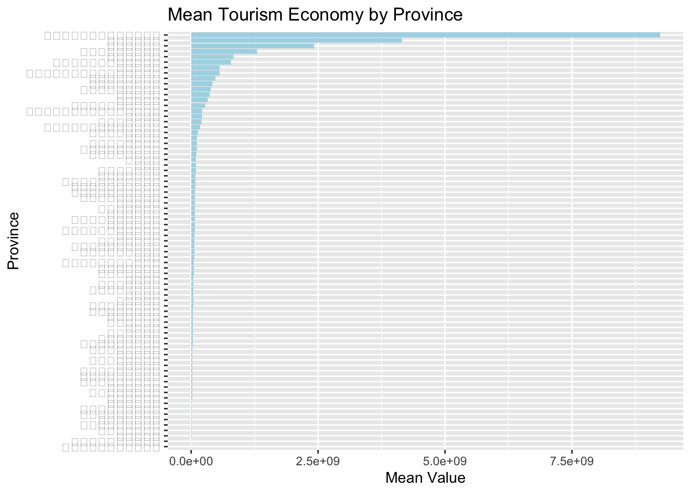

Code
pacman::p_load(spdep, tmap, sf, ClustGeo, parallel,ggpubr, cluster, factoextra, NbClust, ggplot2, pheatmap, heatmaply, corrplot, psych, tidyverse, GGally, spacetime, reader, dplyr)Tourism plays a vital role in Thailand’s economy, accounting for approximately 20% of the country’s GDP. In 2019, the tourism sector generated 90 billion US dollars in revenue from both domestic and international visitors. However, this revenue sharply declined to just 24 billion US dollars in 2020 due to the impact of the COVID-19 pandemic. The figure below illustrates the total tourism revenue from January 2019 to February 2023, highlighting a gradual recovery in the sector beginning in September 2021.
As an enthusiastic newcomer to geospatial analytics, you are eager to investigate whether key indicators of Thailand’s tourism economy are influenced by spatial and spatio-temporal factors. Should you find evidence of such dependencies, your next steps would involve identifying cluster locations, detecting outliers, and pinpointing emerging hot and cold spots in the tourism landscape.
The study area covers all of Thailand, encompassing its diverse regions and provinces. This comprehensive approach enables a detailed analysis of tourism-related indicators across urban and rural areas, capturing both spatial and temporal trends throughout the country.
pacman::p_load(spdep, tmap, sf, ClustGeo, parallel,ggpubr, cluster, factoextra, NbClust, ggplot2, pheatmap, heatmaply, corrplot, psych, tidyverse, GGally, spacetime, reader, dplyr)spdep: Provides functions for spatial dependence, spatial autocorrelation, and spatial regression analysis.
tmap: A powerful package for creating thematic maps and visualizing spatial data.
sf: Handles simple feature geometries and is widely used for manipulating and analyzing spatial data in R.
ClustGeo: Implements hierarchical clustering that incorporates both spatial and non-spatial variables.
ggpubr: Simplifies the process of creating and customizing publication-ready ggplot2-based plots.
cluster: Provides clustering algorithms such as k-means, hierarchical clustering, and more.
factoextra: Offers tools to extract and visualize the results of multivariate data analyses, especially clustering.
NbClust: Helps determine the optimal number of clusters in a dataset using various indices and methods.
ggplot2: A versatile package for creating complex and customizable graphics based on the grammar of graphics.
pheatmap: Creates pretty heatmaps with annotations and clustering options for data visualization.
heatmaply: An interactive heatmap generation tool that supports hierarchical clustering and offers rich interactivity.
corrplot: Provides visualization techniques for displaying correlation matrices.
psych: Includes tools for psychological, psychometric, and personality research, with support for factor analysis, reliability, and descriptive statistics.
tidyverse: A collection of packages designed for data manipulation, visualization, and analysis using a consistent syntax.
GGally: Extends ggplot2 to provide additional tools for visualizing multivariate relationships, such as pair plots.
spacetime: Allows for the manipulation and analysis of spatio-temporal data, integrating space and time in analysis.
reader: A simple package for reading in data, supporting various formats like CSV, Excel, and more.
For the purpose of this take-home exercise, two data sets shall be used, they are:
Thailand Domestic Tourism Statistics at Kaggle. You are required to use version 2 of the data set.
Thailand - Subnational Administrative Boundaries at HDX. You are required to use the province boundary data set。
thailand_domestic_tourism_2019_2023_ver2 <- read_csv("/Users/yuhu/Desktop/Geospatial Analytics and Applications/TakeHome_EX02/archive/thailand_domestic_tourism_2019_2023_ver2.csv")Rows: 30800 Columns: 4
── Column specification ────────────────────────────────────────────────────────
Delimiter: ","
chr (2): province, variable
dbl (1): value
date (1): date
ℹ Use `spec()` to retrieve the full column specification for this data.
ℹ Specify the column types or set `show_col_types = FALSE` to quiet this message.library(sf)
library(dplyr)
adm1 <- st_read(dsn = "/Users/yuhu/Desktop/Geospatial Analytics and Applications/TakeHome_EX02/tha_adm_rtsd_itos_20210121_shp",
layer = "tha_admbnda_adm1_rtsd_20220121") %>%
dplyr::select(c(1:3), 16, 17)Reading layer `tha_admbnda_adm1_rtsd_20220121' from data source
`/Users/yuhu/Desktop/Geospatial Analytics and Applications/TakeHome_EX02/tha_adm_rtsd_itos_20210121_shp'
using driver `ESRI Shapefile'
Simple feature collection with 77 features and 16 fields
Geometry type: MULTIPOLYGON
Dimension: XY
Bounding box: xmin: 97.34336 ymin: 5.613038 xmax: 105.637 ymax: 20.46507
Geodetic CRS: WGS 84name_mapping <- c(
"Lopburi" = "Lop Buri",
"Chonburi" = "Chon Buri",
"Prachinburi" = "Prachin Buri",
"Sisaket" = "Si Sa Ket",
"Nong Bua Lamphu" = "Nong Bua Lam Phu",
"Phang Nga" = "Phangnga",
"Buriram" = "Buri Ram",
"Chainat" = "Chai Nat"
)tourism_data_mean <- thailand_domestic_tourism_2019_2023_ver2 %>%
mutate(province_eng = recode(province, !!!name_mapping)) %>%
group_by(province_eng) %>%
summarise(mean_value = mean(value, na.rm = TRUE))summary(thailand_domestic_tourism_2019_2023_ver2) date province variable
Min. :2019-01-01 Length:30800 Length:30800
1st Qu.:2020-01-01 Class :character Class :character
Median :2021-01-16 Mode :character Mode :character
Mean :2021-01-15
3rd Qu.:2022-02-01
Max. :2023-02-01
value
Min. :-4.250e+03
1st Qu.: 1.740e+03
Median : 9.335e+04
Mean : 3.360e+08
3rd Qu.: 1.817e+07
Max. : 1.103e+11 ggplot(tourism_data_mean, aes(x = reorder(province_eng, mean_value), y = mean_value)) +
geom_col(fill = "lightblue") +
coord_flip() +
labs(title = "Mean Tourism Economy by Province", x = "Province", y = "Mean Value")
tourism_data_boxplot <- thailand_domestic_tourism_2019_2023_ver2 %>%
filter(variable %in% c("revenue_all", "revenue_foreign", "revenue_thai"))ggplot(tourism_data_boxplot, aes(x = variable, y = value, fill = variable)) +
geom_boxplot(na.rm = TRUE) +
labs(title = "Boxplot of Revenue Variables", x = "Variable", y = "Value")thailand_domestic_tourism_2019_2023_ver2 %>%
filter(variable %in% c("no_tourist_all", "no_tourist_foreign", "no_tourist_stay", "no_tourist_thai", "ratio_tourist_stay")) %>%
ggplot(aes(x = variable, y = value, fill = variable)) +
geom_boxplot(na.rm = TRUE) +
labs(title = "Boxplot of Tourist Numbers Variables", x = "Variable", y = "Value")The boxplot illustrates the distribution of various tourist-related variables, highlighting distinct ranges and distributions for each, along with notable outliers. Separating the variable column into individual categories is essential to analyze each group independently. This separation enables a clearer comparison of distributions, making it easier to identify specific patterns associated with total tourists, foreign tourists, domestic tourists, and the ratio of staying tourists. Such an approach allows for a more detailed and insightful interpretation of the tourism data.
thailand_domestic_tourism_2019_2023_ver2 <- thailand_domestic_tourism_2019_2023_ver2 %>%
mutate(
year = as.numeric(format(as.Date(date), "%Y")),
month = as.numeric(format(as.Date(date), "%m"))
)thailand_domestic_tourism_2019_2023_ver2 <- thailand_domestic_tourism_2019_2023_ver2 %>%
dplyr::select(-contains("thai"))tourism_economy_all <- thailand_domestic_tourism_2019_2023_ver2 %>%
pivot_wider(names_from = variable, values_from = value)saveRDS(tourism_economy_all,"/Users/yuhu/Desktop/Geospatial Analytics and Applications/tourism_economy_all.rds")This code reshapes the thailand_domestic_tourism_2019_2023_ver2 dataset from a long format to a wide format using the pivot_wider function. The names_from argument specifies that the values in the variable column will be used as new column names, while values_from indicates that the corresponding data for each variable will be taken from the value column.
tourism_economy_all <- tourism_economy_all %>%
mutate(date = as.Date(paste(year, month, "01", sep = "-")))
ggplot(tourism_economy_all, aes(x = date, y = revenue_all)) +
geom_line(color = "blue") +
labs(title = "Revenue All Over Time", x = "Date", y = "Revenue (All)") +
theme_minimal()tourism_economy_all <- tourism_economy_all %>%
mutate(province_eng = recode(province, !!!name_mapping), # Create province_eng if not already present
date = as.Date(paste(year, month, "01", sep = "-"))) # Convert date column
# Check if province_eng is created
print(colnames(tourism_economy_all)) [1] "date" "province" "year"
[4] "month" "ratio_tourist_stay" "no_tourist_stay"
[7] "no_tourist_all" "no_tourist_thai" "no_tourist_foreign"
[10] "revenue_all" "revenue_thai" "revenue_foreign"
[13] "province_eng" # Proceed with the join if province_eng is confirmed
tourism_economy_sf <- left_join(tourism_economy_all, adm1, by = c("province_eng" = "ADM1_EN"))
# Convert to an sf (spatial) data frame
tourism_economy_sf <- st_as_sf(tourism_economy_sf)write_rds(tourism_economy_sf, "/Users/yuhu/Desktop/Geospatial Analytics and Applications/tourism_economy_sf.rds")tourism_economy_sf <-readRDS("/Users/yuhu/Desktop/Geospatial Analytics and Applications/tourism_economy_sf.rds")df <- tourism_economy_sf
geo <- adm1
df_geo <- st_join(df, geo)
df_geo <- st_drop_geometry(df_geo)saveRDS(df_geo,"/Users/yuhu/Desktop/Geospatial Analytics and Applications/df_geo.rds")df_geo <- readRDS("/Users/yuhu/Desktop/Geospatial Analytics and Applications/df_geo.rds")This code performs a spatial join to combine tourism economic data (tourism_economy_sf) with geographical data (adm1). The first step uses st_join to merge these datasets based on their spatial relationships, ensuring that the geographical data (geometry column) is correctly associated with the tourism data. After the spatial join, the st_drop_geometry function is applied to df_geo, removing the spatial (geometry) attributes from the resulting dataset, leaving only the non-spatial data for further analysis. This approach allows for the integration of spatial and tourism-related information while simplifying the dataset for non-spatial analysis.
numeric_columns <- tourism_economy_sf %>%
st_drop_geometry() %>% # 去掉地理信息列
dplyr::select(where(is.numeric)) %>% # 选择所有数值型列
colnames() # 获取列名numeric_columns <- tourism_economy_sf %>%
st_drop_geometry() %>%
dplyr::select(where(is.numeric)) %>%
colnames()
numeric_data <- tourism_economy_sf %>%
st_drop_geometry() %>%
dplyr::select(all_of(numeric_columns)) %>%
mutate(across(everything(), as.numeric))
class(numeric_data)[1] "tbl_df" "tbl" "data.frame"library(sf)
library(dplyr)
# 列名
numeric_columns <- c("no_tourist_stay", "no_tourist_all", "no_tourist_thai",
"no_tourist_foreign", "revenue_all", "revenue_thai",
"revenue_foreign")
# 去掉几何列并选择数值列
numeric_data <- tourism_economy_sf %>%
st_drop_geometry() %>%
dplyr::select(all_of(numeric_columns)) %>%
mutate(across(everything(), as.numeric))
# 计算相关矩阵
correlation_matrix <- cor(numeric_data, use = "complete.obs")
# 可视化相关矩阵
library(corrplot)
corrplot(correlation_matrix, method = "ellipse", type = "upper",
tl.col = "black", tl.srt = 45, addCoef.col = "black")
This code calculates and visualizes the correlation between selected tourism-related numeric variables. First, it selects relevant numeric columns from the tourism_economy_sf dataset, excluding the geometry column, and ensures they are of numeric type. A correlation matrix is then computed using cor(), capturing the relationships between variables like tourist numbers and revenues. Finally, the corrplot function visualizes the matrix with an “ellipse” method, displaying the correlation strength and direction, along with coefficient labels. This provides insights into how the variables are interrelated.
library(sf)
library(dplyr)
# 列名
numeric_columns <- c("no_tourist_stay", "no_tourist_all", "no_tourist_thai",
"no_tourist_foreign", "revenue_all", "revenue_thai",
"revenue_foreign")
# 去掉几何列并选择数值列
numeric_data <- tourism_economy_sf %>%
st_drop_geometry() %>%
dplyr::select(all_of(numeric_columns)) %>%
mutate(across(everything(), as.numeric))
# 计算相关矩阵
correlation_matrix <- cor(numeric_data, use = "complete.obs")
# 可视化相关矩阵
library(corrplot)
corrplot(correlation_matrix, method = "ellipse", type = "upper",
tl.col = "black", tl.srt = 45, addCoef.col = "black")distance_matrix <- dist(numeric_data, method = "euclidean")
hc <- hclust(distance_matrix, method = "ward.D")plot(hc, labels = numeric_data$province_eng, cex = 0.7, main = "Cluster Dendrogram by Province")Warning: Unknown or uninitialised column: `province_eng`.rect.hclust(hc, k = 4, border = "red")numeric_data <- st_drop_geometry(tourism_economy_sf)
m <- c("average", "single", "complete", "ward")
names(m) <- c("average", "single", "complete", "ward")
ac <- function(x) {
agnes(numeric_data, method = x)$ac
}
agglomerative_coefficients <- map_dbl(m, ac)
print(agglomerative_coefficients) average single complete ward
0.9991829 0.9971421 0.9993326 0.9998507 saveRDS(agglomerative_coefficients, "/Users/yuhu/Desktop/Geospatial Analytics and Applications/agglomerative_coefficients.rds")agglomerative_coefficients <- readRDS("/Users/yuhu/Desktop/Geospatial Analytics and Applications/agglomerative_coefficients.rds")We perform hierarchical clustering on tourism-related data for Thai provinces to identify patterns and groupings. Key numeric columns, such as tourist numbers and revenue, are selected from the tourism_economy_sf dataset, excluding the geometry column. These columns are grouped by province, and the mean values for each variable are calculated to create a summary at the provincial level. To ensure comparability, the data is standardized using scale(). We then compute a Euclidean distance matrix to measure dissimilarities between provinces, and hierarchical clustering is applied using the ward.D method, which minimizes within-cluster variance. The results are visualized through a dendrogram, with four clusters highlighted for visual inspection of the groupings. Finally, we calculate agglomerative coefficients for different clustering methods (average, single, complete, and ward) using the agnes() function, which helps assess clustering effectiveness and offers insights into the most suitable approach for this tourism data.
numeric_columns <- c("no_tourist_stay", "no_tourist_all", "no_tourist_thai","no_tourist_foreign", "revenue_all", "revenue_thai","revenue_foreign")
numeric_data <- tourism_economy_sf %>%
st_drop_geometry() %>%
dplyr::select(all_of(numeric_columns)) %>%
mutate(across(everything(), as.numeric))
dist_matrix <- dist(scale(numeric_data), method = "euclidean")hclust_model <- hclust(dist_matrix, method = "ward.D")In this stage of the analysis, we prepare the data and apply hierarchical clustering using the Ward method. We start by selecting key numeric columns related to tourism, such as tourist numbers and revenue, from the tourism_economy_sf dataset, excluding the spatial geometry column with st_drop_geometry(). The selected columns are converted to numeric format to ensure consistency. We then compute a Euclidean distance matrix using the dist() function, standardizing the data with scale() for comparability across variables. This distance matrix reflects the dissimilarities between provinces based on their tourism indicators. Finally, hierarchical clustering is performed using the hclust() function with the ward.D method, which minimizes within-cluster variance, allowing us to identify compact and distinct clusters.
gap_stat <- clusGap(numeric_data, FUN = kmeans, K.max = 10, B = 100)
plot(gap_stat)In this section, we apply the k-means algorithm to determine the optimal number of clusters for the tourism data. Using the clusGap() function, we calculate the Gap Statistic, which assesses the total within-cluster variation across different cluster counts, up to a maximum of 10. By running the k-means algorithm multiple times (B = 100), the Gap Statistic measures the improvement in clustering relative to a random data distribution. The results are visualized in a plot, where the optimal number of clusters is indicated by the maximum value of the Gap Statistic, representing the best fit for the data.
dist_matrix <- dist(scale(numeric_data), method = "euclidean")
hclust_model <- hclust(dist_matrix, method = "ward.D")
plot(hclust_model, labels = tourism_economy_sf$province_eng, main = "Cluster Dendrogram by Province", sub = "", xlab = "", cex = 0.6)
rect.hclust(hclust_model, k = 4, border = "red")In this section, we conduct hierarchical clustering on tourism-related data and visualize the results. A Euclidean distance matrix is calculated from the standardized numeric_data, ensuring consistent scaling across variables. We then apply the ward.D method for hierarchical clustering to minimize within-cluster variance. The clustering outcomes are visualized through a dendrogram with province labels, revealing their relationships. To further illustrate the clusters, four distinct groups are highlighted with red borders using rect.hclust(), allowing for clear identification of province groupings based on tourism characteristics.
```fwl,eval=FALSE} optimal_k <- 8
kmeans_model <- kmeans(numeric_data, centers = optimal_k, nstart = 25)
tourism_economy_sf\(cluster <- kmeans_model\)cluster
library(tmap) tm_shape(tourism_economy_sf) + tm_polygons(“cluster”) + tm_facets(by = “year”, free.coords = FALSE) + tm_layout(title = “Tourism Economy Clusters by Year”)
In this section, we perform K-means clustering on the tourism-related data and visualize the results spatially. The optimal number of clusters is set to 8, as determined previously. The kmeans() function is used to perform the clustering with 25 random starts to ensure stability in the clustering outcome. The resulting cluster assignments are added to the tourism_economy_sf dataset as a new column.
### **4.4.7 Calculate the coordinates of the center point of a geometry**
```{r},eval=FALSE
geometry_data <- st_geometry(tourism_economy_sf)
shan_nb <- poly2nb(geometry_data)
summary(shan.nb)saveRDS(shan.nb,"/Users/yuhu/Desktop/Geospatial Analytics and Applications/shan_nb.rds")shan.nb <- readRDS("/Users/yuhu/Desktop/Geospatial Analytics and Applications/shan_nb.rds")In this section, we calculate the spatial neighbor relationships between provinces using their geometries. The poly2nb() function is applied to identify neighboring provinces based on their boundaries. The resulting neighbor object is saved as an RDS file for future use, and later reloaded for further analysis. Additionally, the centroid coordinates of each province are calculated, which provides central point locations that can be used in spatial visualizations or further spatial analyses.
adm1.nb <- poly2nb(adm1)Warning in poly2nb(adm1): some observations have no neighbours;
if this seems unexpected, try increasing the snap argument.Warning in poly2nb(adm1): neighbour object has 2 sub-graphs;
if this sub-graph count seems unexpected, try increasing the snap argument.coords <- st_coordinates(st_centroid(st_geometry(adm1)))
if (length(adm1.nb) == nrow(coords)) {
plot(st_geometry(adm1), border = grey(0.5))
plot(adm1.nb, coords, col = "blue", add = TRUE)
} else {
stop("NO,ERROR")
}In this section, we determine the neighboring relationships between provinces using poly2nb() and visualize these connections over the province boundaries. After calculating the centroids of each province, we verify that the neighbor list corresponds to the number of centroid points. If the counts align, we plot the province boundaries with neighbor connections to illustrate spatial relationships; otherwise, an error is triggered to indicate a data mismatch.
geometry_data <- st_geometry(tourism_economy_sf)
years <- unique(tourism_economy_sf$year)
if (inherits(shan.nb, "nb")) {
for (year in years) {
yearly_data <- tourism_economy_sf[tourism_economy_sf$year == year, ]
valid_nb_nodes <- sapply(shan.nb, length) > 0
filtered_nb <- subset.nb(shan.nb, valid_nb_nodes)
coords <- st_coordinates(st_centroid(geometry_data[valid_nb_nodes]))
print(paste("Year:", year))
print(length(valid_nb_nodes))
print(length(yearly_data$revenue_all))
print(length(filtered_nb))
if (any(is.na(yearly_data$revenue_all))) {
stop(paste("There are NA values in the revenue_all column for year", year, ". Please clean the data."))
}
yearly_lcosts <- nbcosts(filtered_nb, yearly_data$revenue_all[valid_nb_nodes])
yearly_w <- nb2listw(filtered_nb, yearly_lcosts, style = "B")
yearly_mst <- mstree(yearly_w)
png_filename <- paste0("Minimum_Spanning_Tree_", year, ".png")
print(png_filename)
png(png_filename, width = 800, height = 800)
plot(st_geometry(geometry_data[valid_nb_nodes]), border = grey(0.5))
plot.mst(yearly_mst, coords, col = "blue", cex.lab = 0.7, cex.circles = 0.005, add = TRUE)
title(main = paste("Minimum Spanning Tree using revenue_all for year", year))
dev.off()
}
} else {
stop("The object shan.nb is not a valid nb object.")
}In this section, we construct the minimum spanning tree (MST) for each year to visualize spatial relationships between provinces based on tourism revenue. The dataset is filtered by year, and neighboring provinces are identified. Revenue data is checked for completeness before calculating edge costs between neighbors. With these costs, a spatial weights matrix is created, enabling the MST calculation to highlight the most efficient connections in terms of tourism revenue.
table(tourism_economy_sf$year)
2019 2020 2021 2022 2023
924 924 924 924 154 data_2019 <- tourism_economy_sf[tourism_economy_sf$year == 2019, ]
data_2019_selected <- data_2019 %>%
select(province_eng, year, no_tourist_all, revenue_all)
nb_2019 <- poly2nb(data_2019_selected)
saveRDS(nb_2019, "data/nb_2019.rds")
data_2020 <- tourism_economy_sf[tourism_economy_sf$year == 2020, ]
data_2020_selected <- data_2020 %>%
select(province_eng, year, no_tourist_all, revenue_all)
nb_2020 <- poly2nb(data_2020_selected)
saveRDS(nb_2020, "data/nb_2020.rds")
data_2021 <- tourism_economy_sf[tourism_economy_sf$year == 2021, ]
data_2021_selected <- data_2021 %>%
select(province_eng, year, no_tourist_all, revenue_all)
nb_2021 <- poly2nb(data_2021_selected)
saveRDS(nb_2021, "data/nb_2021.rds")
data_2022 <- tourism_economy_sf[tourism_economy_sf$year == 2022, ]
data_2022_selected <- data_2022 %>%
select(province_eng, year, no_tourist_all, revenue_all)
nb_2022 <- poly2nb(data_2022_selected)
saveRDS(nb_2022, "data/nb_2022.rds")
data_2023 <- tourism_economy_sf[tourism_economy_sf$year == 2023, ]
data_2023_selected <- data_2023 %>%
select(province_eng, year, no_tourist_all, revenue_all)
nb_2023 <- poly2nb(data_2023_selected)
saveRDS(nb_2023, "data/nb_2023.rds")nb_2019 <- readRDS("/Users/yuhu/Desktop/Geospatial Analytics and Applications/nb_2019.rds")
nb_2020 <- readRDS("/Users/yuhu/Desktop/Geospatial Analytics and Applications/nb_2020.rds")
nb_2023 <- readRDS("/Users/yuhu/Desktop/Geospatial Analytics and Applications/nb_2023.rds")weights_list_2019 <- nb2listw(nb_2019, style = "W", zero.policy = TRUE)
year <- 2019
data_2019 <- tourism_economy_sf[tourism_economy_sf$year == year, ]
moran_i_test_2019 <- moran.test(data_2019$revenue_all, listw = weights_list_2019, zero.policy = TRUE, na.action = na.omit)
print(paste("Moran's I Test for year:", year))print(moran_i_test_2019)weights_list_2019 <- nb2listw(nb_2019, style = "W", zero.policy = TRUE)
year_2019 <- 2019
data_2019 <- tourism_economy_sf[tourism_economy_sf$year == year_2019, ]
set.seed(1234)
moran_mc_simulation_2019 <- moran.mc(data_2019$revenue_all, listw = weights_list_2019, nsim = 999, zero.policy = TRUE, na.action = na.omit)
print(paste("Monte Carlo Moran's I for year:", year_2019))print(moran_mc_simulation_2019)weights_list_2019 <- nb2listw(nb_2019, style = "W", zero.policy = TRUE)
year_2019 <- 2019
data_2019 <- tourism_economy_sf[tourism_economy_sf$year == year_2019, ]
set.seed(1234)
moran_mc_simulation_2019 <- moran.mc(data_2019$revenue_all, listw = weights_list_2019, nsim = 999, zero.policy = TRUE, na.action = na.omit)
moran_mc_values_2019 <- moran_mc_simulation_2019$res[1:999]
simulation_df_2019 <- data.frame(simulated_values = moran_mc_values_2019)
moran_mean_2019 <- mean(moran_mc_values_2019)
ggplot(simulation_df_2019, aes(x = simulated_values)) +
geom_histogram(bins = 20, fill = "blue", color = "black", alpha = 0.7) +
geom_vline(xintercept = moran_mean_2019, color = "red", linetype = "dashed", size = 1) +
labs(title = paste("Monte Carlo Moran's I Simulation - Year", year_2019),
x = "Simulated Moran's I", y = "Frequency") +
theme_minimal()We use the ClustGeo method to apply spatially constrained clustering on tourism revenue data for each year. First, we filter the data by year and compute a proximity matrix based on revenue, alongside a distance matrix derived from spatial data. Using the choicealpha function, we determine the optimal balance between spatial and non-spatial clustering constraints. Hierarchical clustering with spatial constraints is then performed, and the resulting clusters are integrated back into the dataset. We visualize these spatial clusters with the tmap package and display both hierarchical and spatially constrained clusters side by side for each year. This comparison highlights the impact of spatial constraints on cluster formation, offering insights into the clustering outcomes.
analyze_geary_by_year <- function(year, nb_data) {
yearly_data <- tourism_economy_sf[tourism_economy_sf$year == year, ]
weights_list_year <- nb2listw(nb_data, style = "W", zero.policy = TRUE)
cat("Processing year:", year, "\n")
geary_c_test <- geary.test(yearly_data$revenue_all, listw = weights_list_year)
print(geary_c_test)
set.seed(1234)
geary_mc_simulation <- geary.mc(yearly_data$revenue_all, listw = weights_list_year, nsim = 999)
print(geary_mc_simulation)
hist(geary_mc_simulation$res, freq = TRUE, breaks = 20,
xlab = "Simulated Geary C",
main = paste("Monte Carlo Geary's C Simulation - Year", year))
abline(v = mean(geary_mc_simulation$res), col = "red", lwd = 2)
cat("Completed year:", year, "\n")
}
analyze_geary_by_year(2019, nb_2019) for (year in c(2019, 2020, 2023)) {
yearly_data <- tourism_economy_sf[tourism_economy_sf$year == year, ]
if (year == 2019) {
shan.nb <- nb_2019
} else if (year == 2020) {
shan.nb <- nb_2020
} else if (year == 2023) {
shan.nb <- nb_2023
}
weights_list <- nb2listw(shan.nb, style = "W", zero.policy = TRUE)
cat("Processed neighbors and weights for year:", year, "\n")
}for (year in c(2019, 2020, 2023)) {
if (year == 2019) {
weights_list <- nb2listw(nb_2019, style = "W", zero.policy = TRUE)
} else if (year == 2020) {
weights_list <- nb2listw(nb_2020, style = "W", zero.policy = TRUE)
} else if (year == 2023) {
weights_list <- nb2listw(nb_2023, style = "W", zero.policy = TRUE)
}
yearly_data <- tourism_economy_sf[tourism_economy_sf$year == year, ]
local_moran <- localmoran(yearly_data$revenue_all, weights_list)
yearly_data$Ii <- local_moran[, 1]
yearly_data$Pr_ii <- local_moran[, 5]
local_moran_map <- tm_shape(yearly_data) +
tm_fill(col = "Ii", style = "pretty", palette = "RdBu", title = paste("Local Moran's I - Year", year)) +
tm_borders(alpha = 0.5)
local_moran_p_map <- tm_shape(yearly_data) +
tm_fill(col = "Pr_ii", breaks = c(-Inf, 0.001, 0.01, 0.05, 0.1, Inf), palette = "-Blues", title = "Local Moran's I p-values") +
tm_borders(alpha = 0.5)
tmap_arrange(local_moran_map, local_moran_p_map, asp = 1, ncol = 2)
yearly_data$lag_revenue <- lag.listw(weights_list, yearly_data$revenue_all)
quadrant <- vector(mode = "numeric", length = nrow(local_moran))
DV <- yearly_data$lag_revenue - mean(yearly_data$lag_revenue)
LM_I <- local_moran[, 1]
signif_level <- 0.05
quadrant[DV < 0 & LM_I > 0] <- 1
quadrant[DV > 0 & LM_I < 0] <- 2
quadrant[DV < 0 & LM_I < 0] <- 3
quadrant[DV > 0 & LM_I > 0] <- 4
quadrant[local_moran[, 5] > signif_level] <- 0
yearly_data$quadrant <- quadrant
LISA_map <- tm_shape(yearly_data) +
tm_fill(col = "quadrant", style = "cat",
palette = c("#ffffff", "#2c7bb6", "#abd9e9", "#fdae61", "#d7191c")[c(sort(unique(quadrant)) + 1)],
labels = c("insignificant", "low-low", "low-high", "high-low", "high-high")[c(sort(unique(quadrant)) + 1)]) +
tm_borders(alpha = 0.5)
print(LISA_map)
cat("Completed Local Moran's I and LISA analysis for year:", year, "\n")
}for (year in c(2019, 2020, 2023)) {
if (year == 2019) {
weights_list <- nb2listw(nb_2019, style = "B", zero.policy = TRUE)
} else if (year == 2020) {
weights_list <- nb2listw(nb_2020, style = "B", zero.policy = TRUE)
} else if (year == 2023) {
weights_list <- nb2listw(nb_2023, style = "B", zero.policy = TRUE)
}
yearly_data <- tourism_economy_sf[tourism_economy_sf$year == year, ]
gi_fixed <- localG(yearly_data$revenue_all, weights_list)
yearly_data$gi_stat <- as.numeric(gi_fixed)
hotspot_map <- tm_shape(yearly_data) +
tm_fill(col = "gi_stat",
style = "pretty",
palette = "-RdBu",
title = paste("Hot/Cold Spots (Gi*) -", year)) +
tm_borders(alpha = 0.5)
print(hotspot_map)
cat("Completed Getis-Ord Gi* hotspot analysis for year:", year, "\n")
}Completed Getis-Ord Gi* hotspot analysis for year: 2019
In this section, we conduct a Getis-Ord Gi* hotspot analysis to identify hot and cold spots of tourism revenue for 2019. The dataset is filtered, and the centroids of the provinces are used to create a distance-based neighbors list, considering only neighboring provinces within a 50 km threshold. The neighbors’ spatial weights are computed, and the Getis-Ord Gi* statistic is calculated for the revenue_all variable, revealing statistically significant clusters of high (hot spots) and low (cold spots) values. The Gi* results are added to the dataset and visualized on a map, using a red-blue color palette to represent the hot and cold spots for each year. This analysis highlights spatial patterns in tourism revenue across different time periods.
Thailand’s tourism sector has been a cornerstone of its economic growth, significantly contributing to GDP and employment. The COVID-19 pandemic, however, led to a sharp drop in tourist arrivals and revenue, severely affecting this industry. In response, the government introduced financial relief and recovery strategies, focusing on hygiene standards and exploring travel bubbles with key regional markets to rebuild consumer confidence and stimulate tourism.
Geospatial analysis can provide valuable insights into the shifts in tourism activity, especially when comparing pre- and post-pandemic data. Techniques like global and local spatial autocorrelation, hotspot analysis, and clustering can highlight spatial patterns and dependencies in the recovery process, influenced by factors such as regional infrastructure, policy measures, and travel restrictions.
Ultimately, understanding these spatial dynamics will be critical for Thailand’s tourism recovery strategy, enabling targeted support for the hardest-hit areas. By leveraging spatial data and analytics, Thailand can enhance both domestic and international tourism in a way that promotes resilience and sustainable growth across regions.